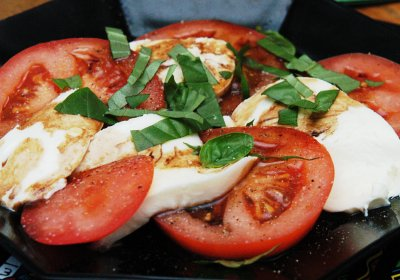

| Zutaten für 4 Personen: | |
| 4 | Tomaten |
| 200 g | Mozzarella |
| Olivenöl | |
| Aceto Balsamico | |
| 8 | Basilikumblätter |
| Pfeffer | |
| Salz | |
Tomaten quer zum Stielansatz in Scheiben schneiden. Den Stielansatz wegschneiden und in Tellern anrichten.
Den Mozzarella in kleine Scheiben schneiden und auf die Tomatenscheiben legen.
Die Basilikumblätter darüber verteilen oder zuerst schneiden und dann verteilen.
Mit Pfeffer und Salz würzen.
Mit Olivenöl beträufeln.
Wer kein echter Italiener ist darf Aceto Balsamico darüber geben. (Echte Italiener bekämen einen Herzinfarkt. Also Vorsicht!)
Keine Ahnung mehr. Das Rezept findet sich aber auch auf Wikipedia
Absolutes Lieblingsrezept und Standard bei meinen Dachterrassenparties. RE
@LINKBACK_TAG@ @WAKELOCK@